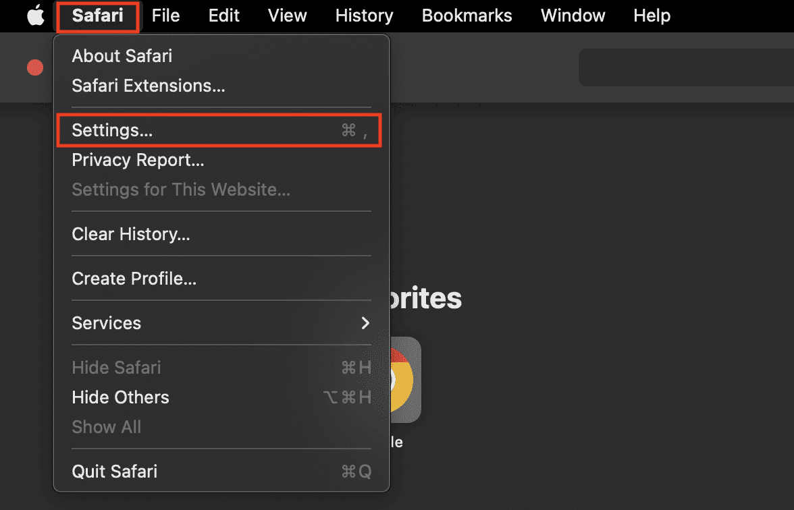
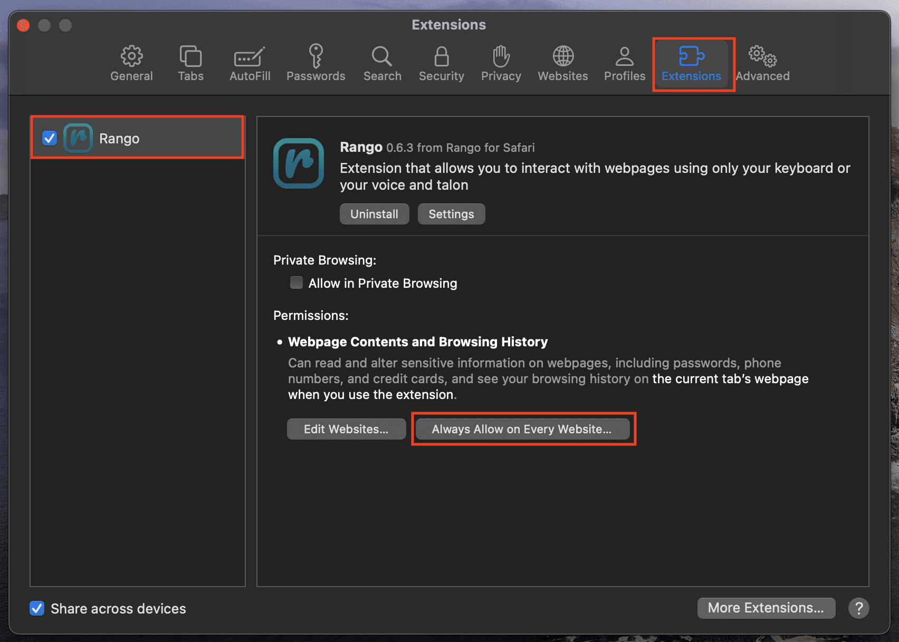
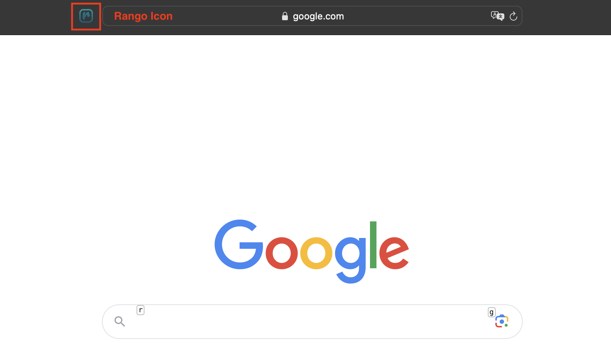

To enable Rango for Safari, you must manually enable it in the Safari Preferences.
Open a Safari web browser.
In the menu bar at the top of your screen, click the word Safari.

In the drop-down menu, click Settings, then click Extensions from the pop-up window, and find Rango.
In the left sidebar, click the check-box next to Rango to allow the browser extension to appear in your web browser.
Click Always Allow on Every Website.

Congratulations, Rango is now enabled for Safari! You can enable and disable the browser extension by clicking the Rango icon in the address bar at the top of your screen.